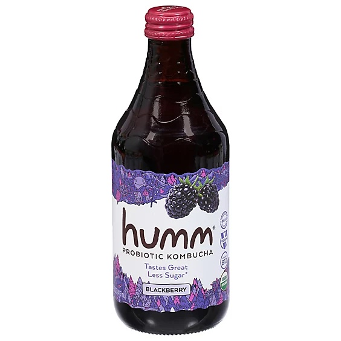
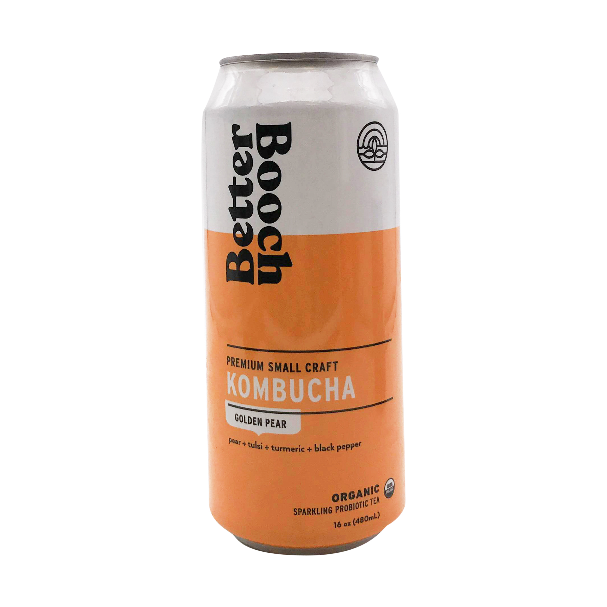
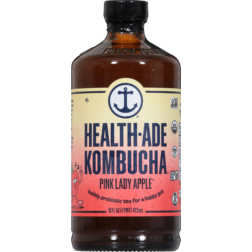
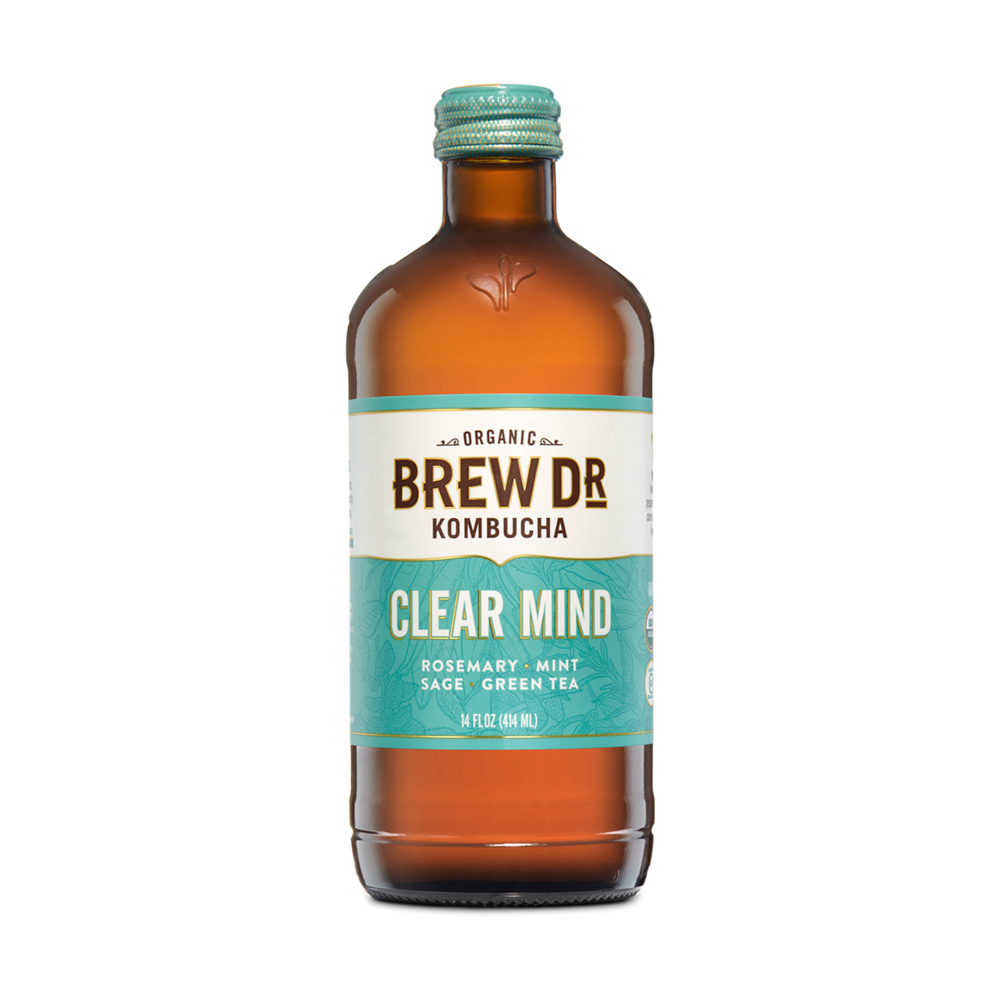
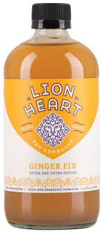

Humm - Blackberry
Humm Blackberry kombucha takes the #1 spot in my ranking any day! This flavor is bright, tart, and perfect for the summertime. The specific method of bottling makes the carbonation almost foamy and smooth, unlike a harsh soda or sparkling water. Although it is delicious on its own, it pairs wonderfully with mint and soda water for a summer mocktail. All of Humm's flavors are delicious and highly recommended by me, but if you see this one in store definitely give it a try. Humm Kombuchas are also naturally flavored and have no added sugars!
Better Booch - Prickly Pear
The #2 spot for my favorite Kombucha goes to Better Booch's prickly pear. Better Booch kombuchas are delightfully tasty with a wide range of fun flavors such as this one. Taking a sip of the prickly pear flavor feels just like biting into a juicy pear on a hot summer day. It is light, fruity, and perfectly sweet. I prefer to enjoy my Better Booches over a tall glass of ice with a squeeze of lemon or lime. With flavors ranging from guava cooler to peach iced tea, there is a Better Booch for everyone!
Health Ade - Pink Lady Apple
The number 3 spot goes to a timeless classic - Health Ade's Pink Lady Apple kombucha. Health Ade kombuchas are deliciously sweet, with that recognizable kombucha carbonation you just can't find in anything else. This flavor is a great one to start with if you are new to the world of Kombucha and want something milder and sweeter. If trying kombucha for the first time, I recommend picking up a bottle of this Health Ade flavor and diluting it with a splash of water and pouring over ice. You won't regret it!
Brew Dr. - Clear Mind
In 4th place is Brew. Dr's Clear Mind kombucha. This kombucha is perfect for those who don't love fruity drinks and prefer a more herbal or sophisticated flavor. The blend of rosemary, mint, sage, and green tea is both calming and delicious. While I don't always reach for this flavor, it is perfect when I am not craving something super sweet but still want something fun to drink.
Lion Heart - Ginger
In 5th place (which is still a high ranking given the amount of kombuchas I have tried) is Lion Heart's ginger flavor. Again, this is a great choice for someone who does not love super fruity or sweet drinks. Lion Heart's kombuchas are very dry, almost similar to a beer. They are very unique compared to most other kombuchas and make for a great non-alcoholic substitute. If you are more adventurous, give this a try for sure!